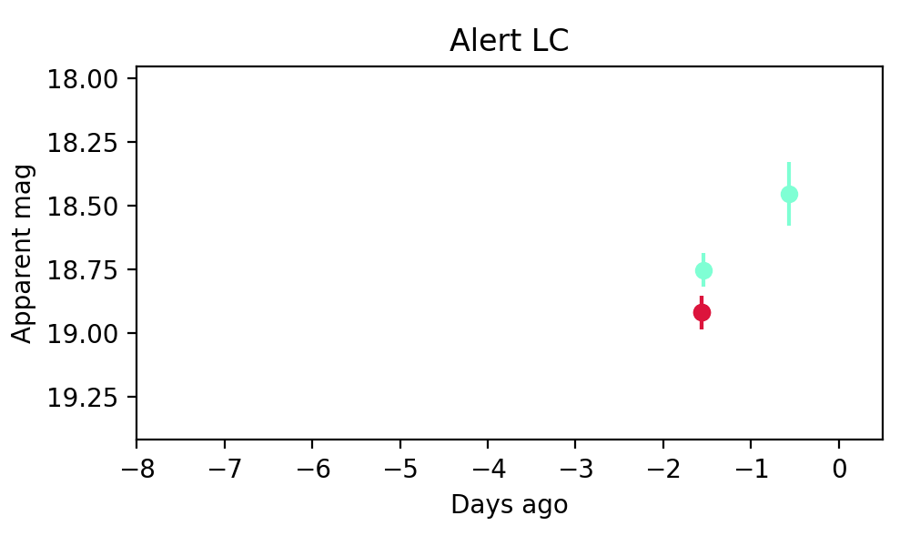
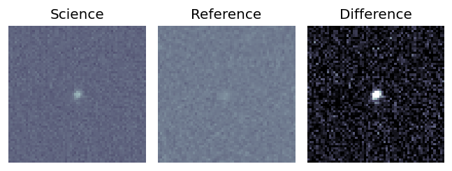
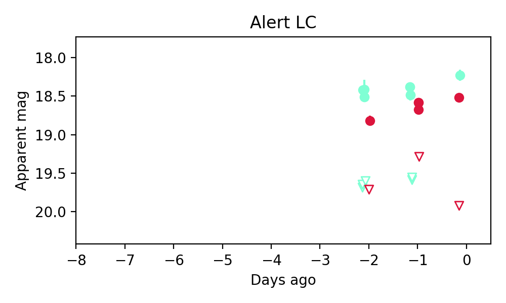
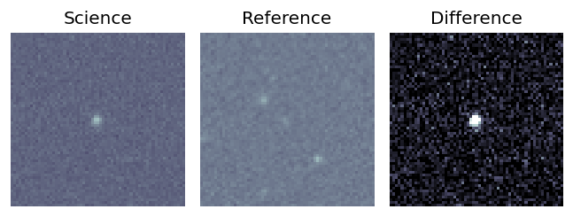
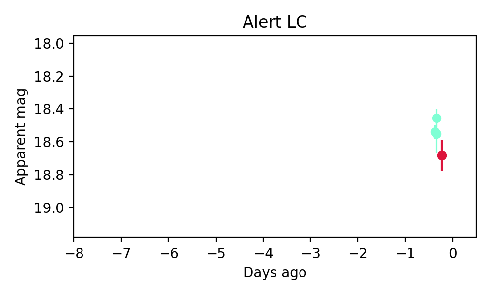
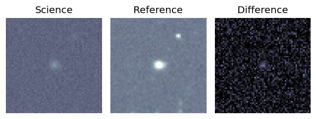
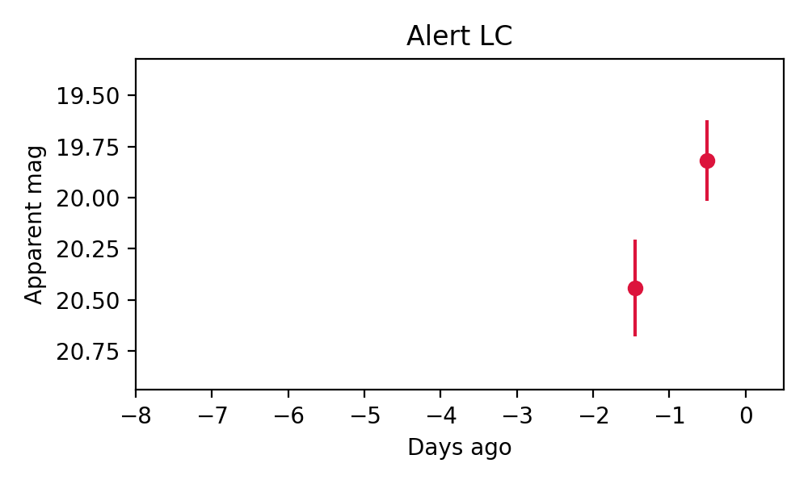

Candidate List 20260110Previous Day Next Day
Section 1: New Sources (age<1d) Section 2: Old (1-5d) sources observed last nightplaceholder
Section 1: New Afterglow/FBOT Cands Last Night (0)
Section 2: Older Sources Observed Last Night (4)
0. ZTF26aaaagat (FBOT?) [Back to Top] [Share] [Trigger Swift] [Fritz] [Lasair]RA, Dec: 10.39897, -5.07067 0h41m35.75s, -5d-4m-14.40sGalactic (l, b): 116.42841, -67.81805 ext(g-r) = 0.062

TESS: Sectors [ 3 30 42 43 70 97]
SDSS (10 arcsec):Found SDSS phot-z: z=0.23; peak abs mag = -22.11
PS1: 0 sources in 3 arcsec
LegacySurvey: 1 sources in 3 arcsec Closest: d = 0.38 arcsec, 153.8 deg (east of north) photoz=0.12 (68% bounds 0.11, 0.15), type=SER peak abs mag = -20.34 (68% bounds -20.07, -20.87)

Extinction-corrected gr color:
From alerts: -0.23 +/- 0.08 mag
Rise Rate:
g: 0.31 mag/day
r: 0.1 mag/day
i: -99 mag/day
Fade Rate:
g: -99 mag/day
r: -99 mag/day
i: -99 mag/day
1. ZTF26aaacwjf (Afterglow?) [Back to Top] [Share] [Trigger Swift] [Fritz] [Lasair]RA, Dec: 173.74723, 63.66547 11h34m59.33s, 63d39m55.70sGalactic (l, b): 136.39983, 51.41723 ext(g-r) = 0.025

TESS: Sectors [14 15 21 41 48 75]
SDSS (10 arcsec):Found SDSS phot-z: z=0.84; peak abs mag = -25.37
PS1: 0 sources in 3 arcsec
LegacySurvey: 1 sources in 3 arcsec Closest: d = 1.31 arcsec, 108.4 deg (east of north) photoz=0.07 (68% bounds 0.03, 0.12), type=REX peak abs mag = -19.31 (68% bounds -17.19, -20.41)

Extinction-corrected gr color:
From alerts: -0.29 +/- 0.12 mag
Rise Rate:
g: 33.07 mag/day
r: 45.62 mag/day
i: -99 mag/day
Fade Rate:
g: 58.46 mag/day
r: -99 mag/day
i: -99 mag/day
2. ZTF26aaacwmd (FBOT?) [Back to Top] [Share] [Trigger Swift] [Fritz] [Lasair]RA, Dec: 162.44027, 60.47681 10h49m45.66s, 60d28m36.51sGalactic (l, b): 146.18456, 50.80238 ext(g-r) = 0.01

TESS: Sectors [ 14 21 48 75 120]
SDSS (10 arcsec):Found SDSS phot-z: z=0.28; peak abs mag = -22.47
PS1: 0 sources in 3 arcsec
LegacySurvey: 1 sources in 3 arcsec Closest: d = 0.11 arcsec, 301.3 deg (east of north) photoz=0.18 (68% bounds 0.13, 0.26), type=EXP peak abs mag = -21.33 (68% bounds -20.6, -22.21)

Extinction-corrected gr color:
From alerts: -0.18 +/- 0.1 mag
Rise Rate:
g: 0.2 mag/day
r: 0.19 mag/day
i: -99 mag/day
Fade Rate:
g: -99 mag/day
r: -99 mag/day
i: -99 mag/day
3. ZTF26aaaecbl (FBOT?) [Back to Top] [Share] [Trigger Swift] [Fritz] [Lasair]RA, Dec: 46.98118, -10.58051 3h 7m55.48s, -10d-34m-49.84sGalactic (l, b): 192.29671, -53.89849 ext(g-r) = 0.073
TESS: Sectors [ 4 31 108 109]
PS1: 0 sources in 3 arcsec
LegacySurvey: 1 sources in 3 arcsec Closest: d = 0.48 arcsec, 0.3 deg (east of north) photoz=0.15 (68% bounds 0.14, 0.19), type=SER peak abs mag = -19.58 (68% bounds -19.32, -20.03)

Rise Rate:
g: -99 mag/day
r: 0.66 mag/day
i: -99 mag/day
Fade Rate:
g: -99 mag/day
r: -99 mag/day
i: -99 mag/day